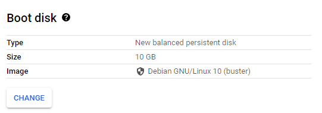
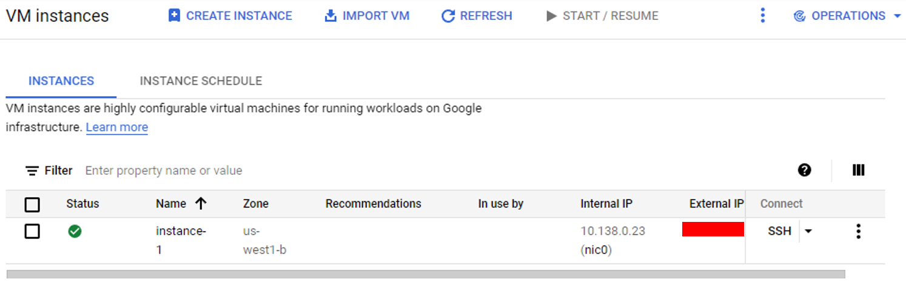
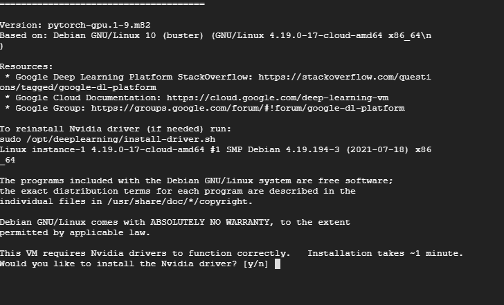
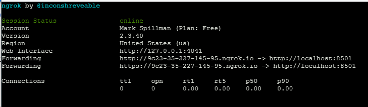

Introduction
GALLOP is designed to run on GPUs and TPUs. Users that don’t have local access to GPUs, or who want to gain access to faster GPUs without needing to purchase their own can make use of cloud computing resources. In this post we’ll look at how to set up a GPU-equipped virtual machine on Google’s Compute Engine cloud service, and then use it to run GALLOP jobs both through the graphical browser-based interface and via python mode.
One feature offered by GCE is preemptible instances, which significantly lowers the cost of using resources. There are some limitations that come with this, but they are usually not a concern for GALLOP jobs that take < 24 hours to complete. It’s also worth noting that new customers to Google Cloud get $300 free credits to try out their services, so it’s well worth having a go. You will need a credit/debit card to gain access to GPUs even though you won’t be charged until the free credits run out. You will also need to request an increase to your GPU quota before they can be used - this only took a few minutes to be approved for me.
Lastly, I’m not sponsored or endorsed by Google at all, I just like this service. There are many other cloud GPU providers who may be worth a look to see if they suit your requirements. If you know of any good ones, please get in contact with me, especially if you want to help with providing instructions for other users.
Starting a VM
Log onto your Google Cloud Dashboard. In the top-left hand corner, you’ll see the now ubiquitous (at least on Google products) three lines menu button. Click this, and a menu will appear. We are interested in the Compute Engine, so hover over that and an additional menu expansion will appear. Click on VM instances.

Once you’ve done that, we will create our GPU-backed VM! Click on the blue Create Instance button:

You’ll be taken to a menu where we will configure our machine. I am going to select the us-west1 region, though you can choose whichever region you like (provided that you have a GPU-quota in that region).
We then need to make sure we choose a GPU-backed machine, so click on the blue GPU option under Machine family, then select which type of GPU and the number of GPUs you require. For this tutorial, we’ll go for a state of the art NVIDIA Tesla A100 GPU. Once you select this, you’ll notice a price estimate in the top right hand corner, which is quite expensive! Don’t worry, this will come down once we switch to a preemptible instance type.

There is no need to change the machine type or CPU platform, so our next task is to change the Boot disk. The default is a Debian GNU/Linux environment, we’ll change this so that pytorch (one of the libraries that GALLOP depends on) is pre-installed.
To do this, click the “change” button under Boot disk:

Once you do that, a menu will appear. Under Operating system, select Deep Learning on Linux, then in the Version menu, select Deep Learning Image: PyTorch 1.9 m82 CUDA 110. You should end up with something like this:

Once happy, press Select.
The last thing we’ll do is set our instance to be preemptible. This will bring the hourly cost down dramatically, though it comes with some restrictions relative to a non-preemptible instance. See here for more details.
Near the bottom of the page, a blue expandable menu titled “NETWORKING, DISKS, SECURITY, MANAGEMENT, SOLE-TENANCY” is available. Click this to expand. Then click the Management expandable section. Now look down this list for the “Availability policy” menu, which has a drop-down list titled Preemptibility. Click this, and select “On”. The price estimate in the top-right corner should reduce significantly!

Once you have completed all of the steps above, we are ready to create the instance. Press the blue Create button at the bottom of the page. You will be taken to a new screen which displays the status of the instance, and will allow us to connect to it via a browser-based SSH window. It takes a few minutes for the instances to become accessible, but once it’s ready, you should see something like this:

To connect to our instance, on the right hand side you’ll see an arrow next to “SSH”. Click this and then select “Open in browser window”. A new window will appear, which will connect to your instance. It will ask you if you want to initiate a connection - press the blue “Connect” button. After a short wait, you will be greeted with the following screen:

Installing the CUDA driver and GALLOP
Installing the CUDA driver
Once SSH’d into the VM for the first time, I typed y, then pressed enter to install the CUDA driver. This unfortunately failed (I’m not sure why, but this happens frequently! Thankfully, we can fix it quite easily). If yours doesn’t fail, proceed onto the GALLOP installation described below, otherwise follow these steps to get the CUDA driver working.
Run the following commands one by one:
sudo rm /var/lib/apt/lists/lock && sudo rm /var/cache/apt/archives/lock && sudo rm /var/lib/dpkg/lock*
sudo dpkg --configure -a
sudo /opt/deeplearning/install-driver.shThe last command in particular may take a couple of minutes to run. If any errors occur during these steps, then depending on the error, you may need to run a few more commands to resolve them.
One possible issue is:
dpkg: error: parsing file '/var/lib/dpkg/updates/0003' near line 0:
newline in field name '#padding'I solved this issue by running sudo rm /var/lib/dpkg/0003, though you may need to replace 0003 with whatever number you have on your error.
Another potential issue is the second command complains about the google cloud sdk:
Errors were encountered while processing:
google-cloud-sdkIf this occurs, run the following commands and hopefully it’ll work. The first command can take a few minutes to run.
sudo apt-get upgrade google-cloud-sdk -y
sudo dpkg --configure -a
sudo /opt/deeplearning/install-driver.shIf you get any other errors, I found several examples of other people experiencing the same thing on Google so I suggest searching for your error message. Feel free to contact me by email or on Twitter and I can try to help.
Installing GALLOP and running in Python mode
Once the CUDA driver is installed, we’re ready to install GALLOP! Run the following command to grab the code from github and install it to the VM.
git clone https://github.com/mspillman/gallop.git && cd gallop && pip install .Once these commands are finished, GALLOP is now installed. If you’re running in python mode, then you can upload a script (and diffraction data & ZMs) using the “gear” menu in the top right. Just below you’ll also see an option for downloading files which will be of use to obtain your results.

You may also be interested in using SSH to access JupyterLab
https://cloud.google.com/vertex-ai/docs/workbench/user-managed/ssh-access
Running GALLOP via the Browser interface
To use the browser interface, we’ll need to make use of ngrok which is available for free. Run the following command to download and unzip the ngrok executable:
wget https://bin.equinox.io/c/4VmDzA7iaHb/ngrok-stable-linux-386.zip && unzip ngrok*.zipWe then need to setup ngrok with our authoken.
Run the following command, but ensure you paste in your authtoken in the space I’ve indicated. This will be pre-populated in “step 2” on your ngrok homepage.
./ngrok authtoken [authtoken goes here]Once this is done, we will first start the browser interface running in a background process:
streamlit run gallop_streamlit.py &>/dev/null &
The process ID displayed will allow you to kill streamlit if needed with the command kill 9943 command, where you replace 9943 with the process ID that is displayed.
Lastly, to get our ngrok link and access the GALLOP browser interface, run:
./ngrok http 8501And the following will appear:

Click on the Forwarding URL and you will be taken to the GALLOP browser interface.
Note - when I tried it, Google Chrome complained that it suspected it was some sort of phishing attempt but Firefox opened the URL without complaint. Not sure what happened there, but if you get a concerning red screen, I suggest switching to Firefox!
Once finished
Once you’re finished, you may wish to stop, suspend or delete your instance in order to avoid incurring any additional fees. Press the small three-dots menu on the right hand side of your instances page, and various options will appear.

Conclusions
In this post, we’ve seen how to get a preemptible GPU-equipped VM running on Google Compute Engine, and install the CUDA driver and GALLOP on it.